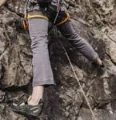

Great climbers don’t power their way up a wall, they “technique” their way to the top using a set of moves designed to help them attack specific problems. If you want to become a better climber, hone your technique and movement. And the best way to do that is by climbing every chance you get.
Improving technique involves learning principles of movement and balance. Then you can concentrate on nailing the nuances of individual moves.
It’s hard to overstate the importance of good technique. When you focus on technique, moves start to click into place and you find yourself floating up routes that used to be too difficult. This section covers some key concepts:
Feet are the foundation of climbing. Lots of beginners try to pull themselves up the wall and quickly tire out. Think about climbing a ladder—you don’t pull yourself up, you step up, and use your arms and hands for balance. It’s the same in climbing.
Basic techniques for using your feet are edging and smearing:
When you smear, look for small depressions or protrusions that will give a little extra friction. You can also flatten out the angle for slightly better purchase.
Keep the following footwork tactics in mind when climbing:

When you’re lucky enough to have a line of jugs leading straight up the wall, climbing is pretty intuitive. When you’re on a route where you have to move and pull in different directions, though, you have to use your body to maintain balance.
When you have to use a hold that’s out to the side, you can’t pull straight down. So you need to find a way to counter the force of that side pull, so you don’t lose balance and barn-door off the wall.
Balancing tactics:
Learn how to use less energy and how to give your muscles a break as you climb:
Having a good arsenal of climbing moves helps you solve problems and tackle more challenging routes. Each of these moves employs principles covered in the technique section, above.

A back step is the opposite of a normal step. Instead of stepping on a hold with your big toe and your hips squared to the wall, you turn your hip to the side and step with the outside edge (little-toe side) of your shoe.
Back stepping helps get your hip close to wall, making it easier to straighten your arms and take a rest. It can also provide enough extension to reach an elusive hold. Back steps are especially useful for saving energy on steep and overhanging routes.
A drop knee is a more extreme back step. It works best when you have a foothold near hip level. Step onto it with the tip of your toe; then roll your knee in until the outside of your shoe rests on the hold and your knee actually points down.
Just like a back step, a drop knee gets your hip close to the wall. It’s great for a rest, but it’s especially great when you need extra reach on a steep or overhanging wall.

Stemming is pushing against two opposing surfaces. This could be in a chimney, in a corner, or on an otherwise flat wall that has a big, protruding feature.
You can stem using any combination of hands and feet, but the key is to use counter pressure to stay in balance. Stemming relies on your big leg muscles, so it’s an extremely efficient way to climb, and can give you some great rests.
Flagging is counter balancing by using a limb to shift your weight. The goal is to keep from swinging away from the rock.
Flagging is advantageous any time you’re using holds that are all on the same side of your body. Because that also stacks all your weight to one side, you simply swing that leg out to the other side of your body to keep yourself in balance.
Lay-backing is when you pull and lean off one side of a flake or a crack and push your feet against the other side. When you have good footholds, laybacks are very efficient because your arms are straight and your feet do the hard work. When lack of good footholds requires you to smear, keep your heels low to maximize the amount of rubber against the rock.
You can use a lay-back any time you’re in a crack and jamming isn’t an option, or you’ve got an opposing wall to push off against, like in a dihedral crack.

A mantle is when you push down on a hold and bring feet up to meet hands. A classic example of mantling is at the top of a climb when you need to pull yourself onto the ledge.
To mantle, push down on a hold to get your weight above it, then move your foot up to take the place of your hand.
Mantles are necessary when you top out, but are also useful mid-climb when you have a big handhold and you need to get your feet high.
Like the name implies, an undercling is when you use the underside of a hold. Using underclings may feel counter-intuitive at first, because instead of pulling down on the hold, you’re pulling up.
One key to a good undercling is to find good, high footholds so you can maintain body tension by pushing with your feet as you pull on the hold. Keeping your feet high puts the hold around waist level and lets you keep your arms straighter.
A side pull is any hold that’s oriented for a sideways pull. The key to a well-executed side pull is to balance out that sideways pull by shifting your body weight or by applying a counter force.
Like underclings, side pulls can feel awkward because you have to adapt the direction of your pull to the orientation of the hold. But once that feeling clicks, suddenly you can use holds all around you, not just those straight above.
A gaston is the inverse of side pull. In a side pull, the hold is oriented so that you pull in, toward yourself. A gaston is also oriented for a sideways force, but instead of a pull in, it requires a push out.
The position is kind of like if you were trying to open an elevator door; your elbow is bent and pointing out to the side with your fingers pointing in toward you.
Gastons may feel unstable because all the force comes from your shoulder. But adding this move to your repertoire really opens up the wall.
Palming is the hand version of smearing: You push against the rock with an open palm.
Palming can help you maintain balance while you reposition your feet. It comes in handy if no good handholds are available. Palming is also useful when stemming because it allows you to apply counter pressure to a blank face. And on slab climbs, fingers-down palming is especially helpful.
Safety is your responsibility. No article or video can replace proper instruction and experience. Make sure you practice proper techniques and safety guidelines before you climb.